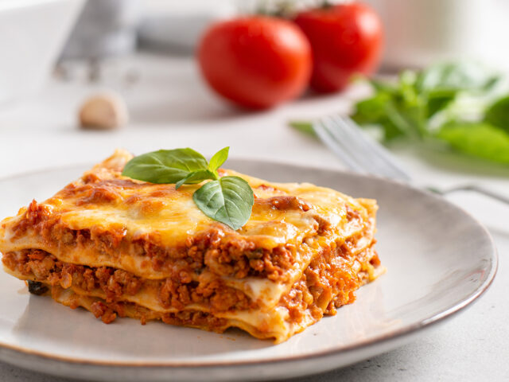

Lasagna

Description:
Lasagna is a classic italian dish that has spread to every corner of the planet. Its simplicity and
great taste with only a few ingredients makes it an obvious choice for a nice family meal. Today we
will be showing you an easy recipe for 4 people to enjoy.
Ingredients (For 4 portions):
- 8 lasagna plates
- 500 g minced meat
- 200 g mozzarella, in pieces
- 200 g ricotta cheese
- 0.5 dl grated parmesan cheese
- 750 g tomato sauce, for pasta
- 1 yellow onion, chopped
- 1 large egg
- 1 tsp italian spices
- salt and pepper
Steps:
- Preheat the oven to 225 degrees celcius.
- Fry the minced meat with the onion until cooked. Mix with the pasta sauce and move to a large bowl.
- Whisk the egg in another bowl, mix with ricotta and italian spices.
- Cover an oven form (about 22 cm in diameter) with a thin even layer of oil.
- Break two lasagna plates and cover the bottom with these. Cover with 1/3 of the meat+sauce mix, 1/3 of the ricotta mix and 1/3 of the mozzarella. Repeat this step three more times.
- Sprinkle parmesan cheese over the top.
- Put the form in the oven about 30 minutes, until the surface is golden brown.
- Take out the form and serve immediately.
- Enjoy!
P.S. A more time consuming but more tasty recipe uses bechamel sauce - Check it out!